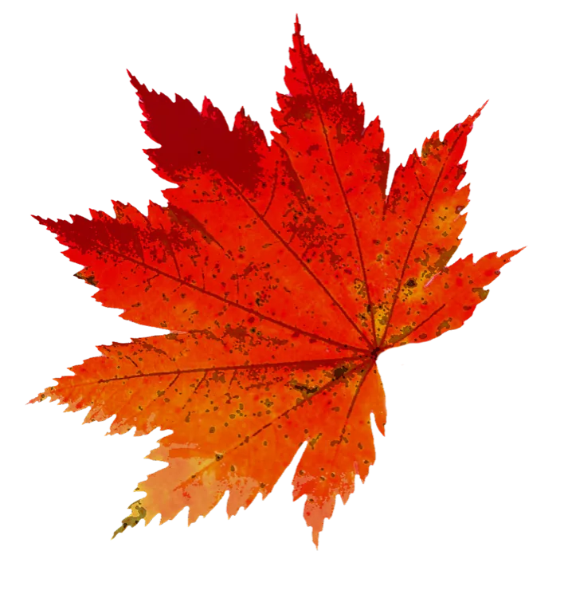
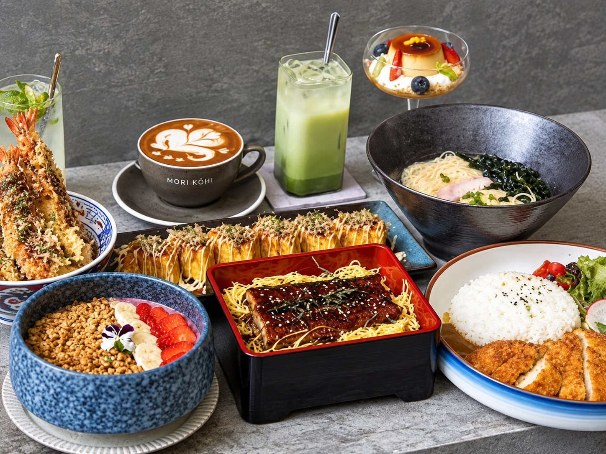
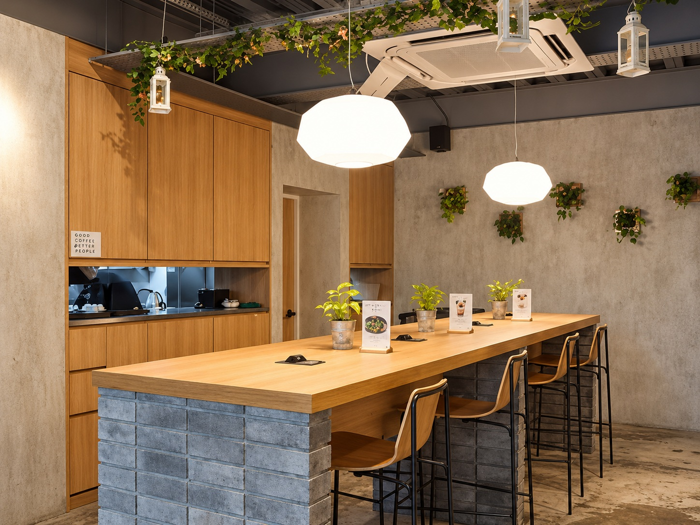
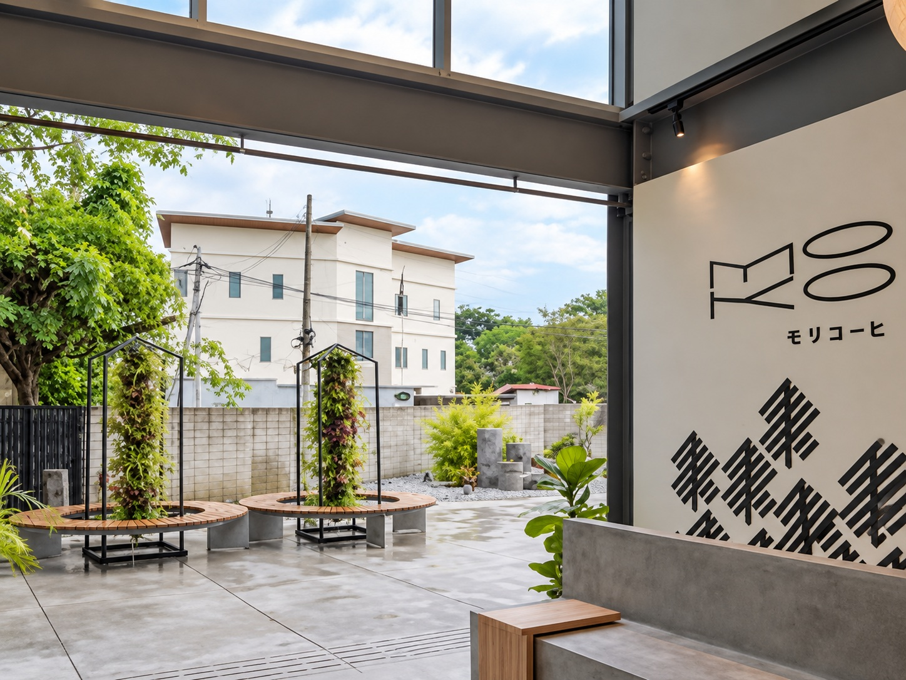
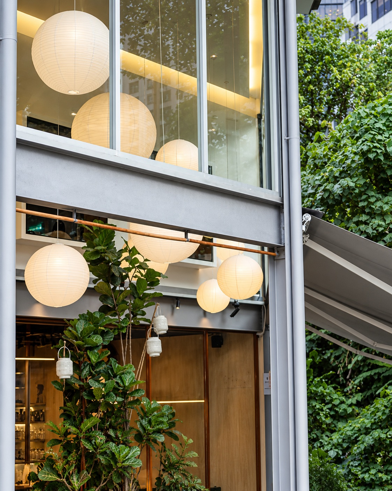
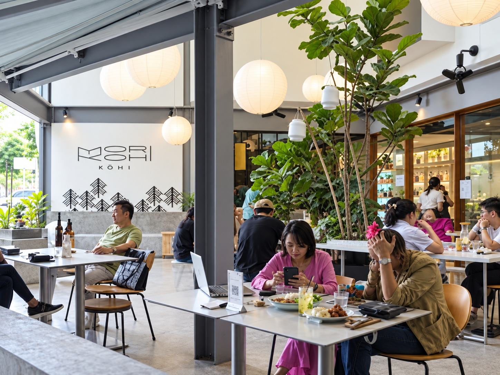
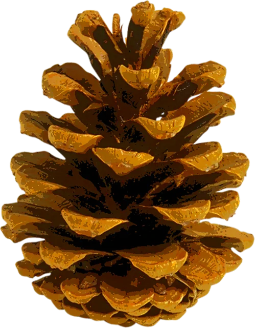

2025
2025Food, art & culture
The inaugural event brought together Japanese street food, an Anime Art Contest, cultural demonstrations and community activities at Mori Kohi Supēsu.
The 2026 line-up may differA weekend celebration of Japanese culture, food, art and community — set within Mori Kohi’s urban forest in the heart of Kuala Lumpur.


The 2026 programme is still being announced. These are the kinds of experiences that shaped Mori Kohi’s first Aki Matsuri in 2025.
Festival bites and Japanese flavours served throughout the gathering.

Live cultural showcases brought Japanese traditions into Mori Kohi’s garden setting.

The inaugural festival included an Anime Art Contest alongside culture-focused activities.

Small activities and discovery booths make the festival something to explore, not simply watch.

Guests gathered for Bon Odori at the 2025 festival — an easy, communal way to close the day together.


Aki Matsuri began at Mori Kohi in 2025 as a weekend gathering built around food, dance, art and Japanese culture. For 2026, the festival returns to the Jalan Aman home of Mori Kohi and Supēsu — a green, contemporary space made for slowing down, meeting people and discovering something new.
2025The inaugural event brought together Japanese street food, an Anime Art Contest, cultural demonstrations and community activities at Mori Kohi Supēsu.
The 2026 line-up may differ 2025
2025Visitors joined Bon Odori, explored booths and met community partners including JAGAM, turning the café and event space into a small cultural gathering.
2026 programme to be announced
Set just off Jalan Tun Razak, Mori Kohi is a café and green retreat built around the idea of a forest within the city. Aki Matsuri takes over its Supēsu event space and surrounding atmosphere.
| Fri 25 Sep | 2026 |
|---|---|
| Sat 26 Sep | 2026 |
| Sun 27 Sep | 2026 |